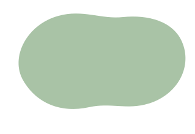
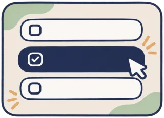
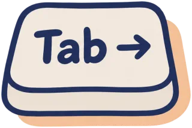
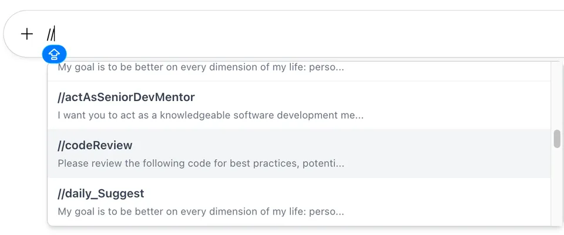

Your saved prompts, one // away.
AI Prompt Assistant is a free Chrome extension. Type // in ChatGPT, Claude, Gemini and other AI chats, pick one of your saved prompts, and press Tab. It drops straight into the message box, ready to send.
- No account needed
- Prompts stay in your browser
- No ads or tracking

How it works
Three keys and you're done. Your prompts work the same way on every supported site.
Type //
Click in the chat's message box and type two slashes. A menu of your saved prompts opens.

Pick a prompt
Keep typing to narrow the list: //sum shows shortcuts with “sum” in them. Move with ↑ ↓.

Press Tab
The prompt replaces your //shortcut. Add your own text, then send it as usual.
Tip: press Tab, not Enter. On many chat sites Enter sends the message. Tab always inserts the prompt and leaves sending to you.

What you get
One set of prompts, every chat
Save a prompt once and use it in ChatGPT, Claude, Gemini, Copilot and more. No more copying from a notes file.
Easy to manage
Add, edit and delete prompts on the settings page. Five sample prompts are there to start you off.
Back up to your Google Drive
Optional. Save your prompts to a file in your own Drive and load them on another computer.
Export and import
Download your prompts as a JSON file, or import a file a colleague shared with you.
Light and dark
The extension follows your system's light or dark setting.
Private by design
Prompts are stored in your browser. We run no server and collect nothing. Read the privacy policy.
Where it works
The extension works on these AI chat sites as soon as you install it:
| Chat tool | Addresses |
|---|---|
| ChatGPT | chatgpt.com chat.openai.com |
| Claude | claude.ai |
| Google Gemini | gemini.google.com |
| Google AI Studio | aistudio.google.com |
| DuckDuckGo AI Chat | duckduckgo.com duck.ai Next update |
| Microsoft Copilot | copilot.microsoft.com copilot.com Next update m365.cloud.microsoft |
| Glean | app.glean.com |
| NotebookLM | notebooklm.google.com |
Coming next: add your own sites. The next update lets you add any other chat site, such as your company's internal AI tool. See the release notes.
Ready to try it?
Install it from the Chrome Web Store, then follow the short setup guide to add your first prompt.